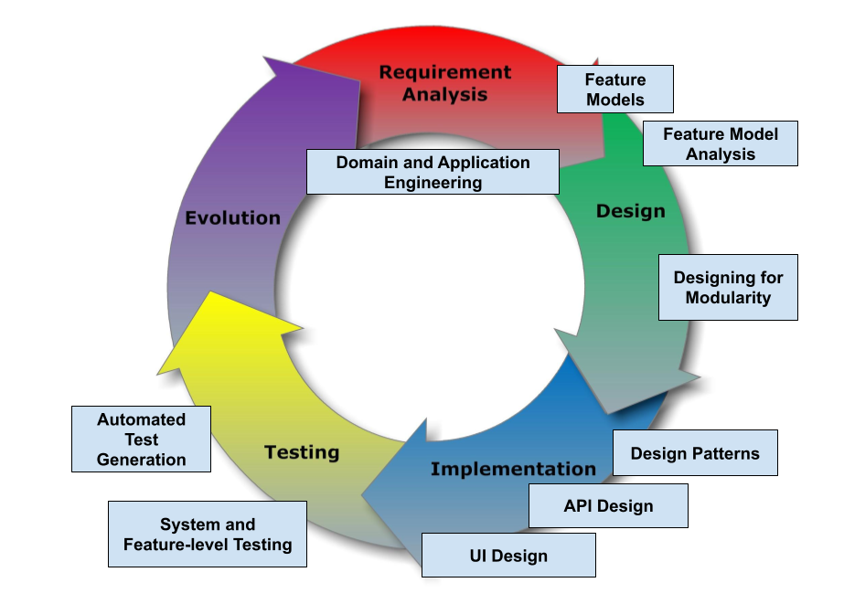

Course Information:
- Course Name: TDA 594/DIT 593 - Software Engineering Principles for Complex Systems
- Semester: Fall 2020 (Study Period 2)
- Course Examiner: Greg Gay
- Lecture Hours: Tuesday and Thursday, 13:15 - 15:00HB2 (Tuesday), HC4 (Thursday) Johanneberg Campus
Course Purpose
Real-world software systems are becoming increasingly complex and pervasive. Consider application domains such as enterprise computing (e.g., data-processing/AI systems), business information systems (e.g., web portals), cyber-physical systems (e.g., automotive software, home automation), systems software (e.g., operating system kernels), or mobile software and software ecosystems (e.g., Android apps). All of these domains boast software systems of unprecedented complexity, many of which are long-living and exist in many different variants. Dedicated planning, modeling, design, realization, and advanced analysis are needed to deliver these systems in a safe, robust, and secure manner.
The goal of this course is to present advanced techniques aimed at creating complex systems with many interacting features and variable configurations. We will examine the design, implementation, and verification of complex systems, focusing on managing complexity at different stages of the system development life cycle. We will also examine how the development process must be organized to deliver such systems. This class is particularly focused on how to create systems that can change and evolve over time - systems that can be customized for new customers or new market environments.
Much of this course will focus on software product lines (SPLs) - highly configurable families of systems built around a set of common, modularized features. SPLs are developed from a common set of core assets in a planned way, integrating assets into a shared architecture. By developing large software systems in this way, companies can produce a set of products more economically, since the development effort put into the shared assets does not need to be duplicated. SPLs can also help companies to better address product customization tasks to meet specific needs of individual customers. This allows sustaining a high rate of product innovation, while keeping guaranteed levels of overall system performance and quality.
SPLs are seen in many domains, and are highly challenging to develop as they have technical, process, organization, and business-related aspects. We focus on them, as they are designed to be highly evolvable - designed both to reuse components and for components to be reused. Almost all modern systems are designed for one of these two goals - a web app with a REST API is designed to be reused, while a complex web app constructed using third-party libraries is designed to reuse assets. SPLs are designed to deliver reusable components and to reuse those components. Design, implementation, and verification techniques for SPLs are applicable to all evolvable, reuse-driven systems. We will also examine other forms of complex systems and provide insight into how they are delivered.
Learning Objectives
Knowledge and understanding- Explain the challenges of engineering complex software systems
- Explain industrial practice and examples of complex software systems engineering
- Explain processes and concepts for engineering complex and variant-rich software systems
- Explain business-, architecture-, process-, and organization-related aspects of engineering complex software systems
Competence and skills
- Model a software system from different perspectives (e.g., using feature models, UML diagrams, architecture description languages)
- Engineer a variant-rich software system (e.g., variant-rich software system, software product line, software ecosystem)
- Analyze and re-engineer a complex software system
- Use and reason about modularization techniques
- Use modern component or service frameworks
Judgement and approach
- Analyze existing software systems and discuss potentials for improvement or re-engineering
- Reason about characteristics software modularity concepts
- Recognize in which situations which principles for handling of complex software systems are appropriate
- Read and analyze scientific literature
This content is made available in the interest of sharing educational material with any who might find it useful. This page is updated periodically, and may not be in synch with the course itself. For current course students, the latest content, assignment submission, and discussion forums are available on Canvas.

This work is licensed under a Creative Commons Attribution-ShareAlike 4.0 International License.
Note: All documents were originally written in Google Docs and converted to PDF and PPTX/DOCX. The PPTX/DOCX versions may be accessed by replacing the end of the link (.pdf -> .pptx, .docx). There may be some formatting errors in slides that did not exist in the original document. Access to the original Google Docs version is available on request (greg@greggay.com).
Documents
Lectures
- Lecture 01 - Complexity and Software Product Lines
Some slides provided by Thorsten Berger Additional Reading: Feature-Oriented Product Lines - Ch 1; Variability mechanisms in software ecosystems - Lecture 02a - Domain and Application Engineering
Additional Reading: Feature-Oriented Product Lines - Ch 2; Software Product Lines in Action - Ch 1 - Lecture 02b - RoboCode Introduction
- Lecture 03 - Feature Modelling
Activity
Additional Reading: Feature-Oriented Product Lines - Ch 2, 10 - Lecture 04 - Feature Model Analysis
Video
Activity
Additional Reading: Feature-Oriented Product Lines - Ch 2, 10; SAT and MAX-SAT for the Lay Researcher; Automated analysis of feature models 20 years later: A literature review (Sec 5); Feature models, grammars, and propositional formulas - Lecture 05 - Variability Implementation
Additional Reading: Feature-Oriented Product Lines - Ch 3-5; Mastering Software Variability with FeatureIDE - Ch 9 - Lecture 06 - Models for Automotive Embedded Systems Development
(Industrial Speaker - Henrik Lönn, Volvo Trucks) - Lecture 07 - Design Patterns for Variable and Evolving Systems
Additional Reading: Feature-Oriented Product Lines - Ch 4; Head-First Design Patterns - Ch 1, 3, 4, 7, 8 - Lecture 08 - Modularity
Additional Reading: Feature-Oriented Product Lines - Ch 4; David Garlan and Mary Shaw. "An Introduction to Software Architecture." - Lecture 09 - API Design
Additional Reading: REST (Representational State Transfer), Good API Design and Why It Matters, A Web API ecosystem through feature-based reuse - Lecture 10 - System-Level Testing
Testing Activity
Additional Reading: Software Testing & Analysis - Ch 10, 11, 21, 22 - Lecture 11 - Testing of Feature Interactions
Category-Partition Method Activity
Combinatorial Interaction Testing Activity
Additional Reading: Software Testing & Analysis - Ch 10, 11, 21, 22, Feature-Oriented Product Lines - Ch 9 - Lecture 12 - Automated Test Case Generation
Additional Reading: Automated Support for Unit Test Generation (Tutorial)